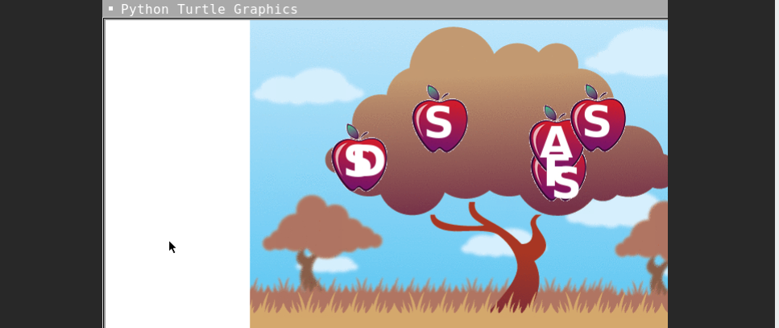
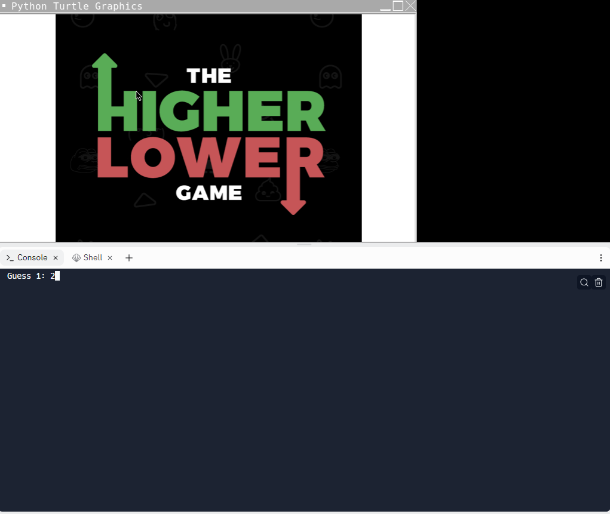

Portfolio
Home
Portfolio
About Me
This is my Portfolio Page!
Second day scratch project.
Using replit to make customizable Saint Bernard dog.

This is our game, "Build a St.Bernard Simulator".
A fun game where people can customize their own dog
(kind of like build a bear but dog version) and they
can do so by choosing colors for the dog and answering
questions about the dog’s personality and specifics. You can
spend endless hours making very different dogs and
will never get bored. It was made in the span of three days,
but is still very fun!
Using replit to make Higher/Lower game.

This is our Higher/Lower game. A game where you can choose
any maximum value you want. You then have to guess a number in that range.
The game will keep telling you if your guess is higher or lower untill you get
to the desired digit. There is also a scoreboard where you can see yourself
compared to other people.
Using Replit to make an E-card.

We used replit to make an E-card for the sick children in the hospital. When you open the
card there is a "Get Well" message at the top. There is also a minion that starts dancing with
music playing in the background. Then a few balloons appear and move around.
Modified bits in pictures.
Use data files to create graphs.
Using netlogo do remix of illusions.
Interactive Fiction Rags to Riches.
HTML Backgorund Color